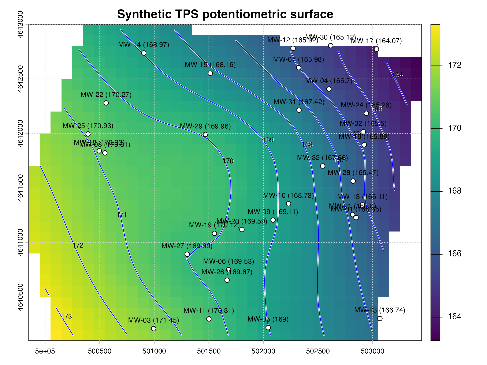
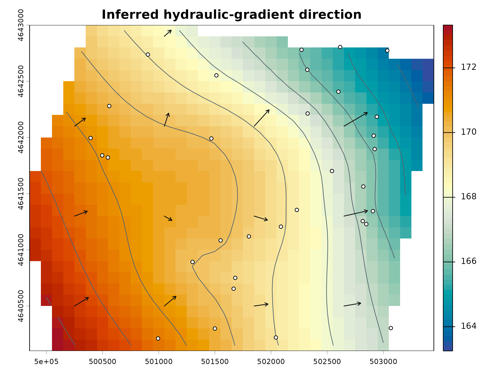

Five-minute quick start
quick-start.RmdThis workflow is runnable after
install.packages("potentiomap"). It uses released synthetic
data in EPSG:26916. The head values are synthetic elevation units rather
than field measurements.
Prepare the observations
data("synthetic_wells", package = "potentiomap")
points <- ps_make_points(
synthetic_wells,
x = "x", y = "y",
value = "gw_elevation",
name_col = "well_id",
crs = "EPSG:26916"
)
head(values(points)[, c("Name", "Z")])
#> Name Z
#> 1 MW-01 166.65
#> 2 MW-02 165.50
#> 3 MW-03 171.45
#> 4 MW-04 165.70
#> 5 MW-05 169.00
#> 6 MW-06 169.53Z is the standardized head field and Name
identifies each observation.
Build the surface and contours
aoi <- ps_sample_aoi()
surfaces <- ps_interpolate(
points,
methods = "TPS",
grid_res = 100,
mask = aoi,
padding = 0
)
#> Warning: TPS GCV selected lambda 1.81248e-05 at a search boundary; inspect
#> sensitivity and prediction support.
contours <- ps_contours(surfaces$TPS, interval = 1)
data.frame(
output = names(surfaces),
rows = nrow(surfaces$TPS),
columns = ncol(surfaces$TPS),
cells_with_values = global(surfaces$TPS, "notNA")[[1]],
contour_features = nrow(contours)
)
#> output rows columns cells_with_values contour_features
#> 1 TPS 29 36 904 10Preserve the native quicklook
ps_quicklook(
surfaces$TPS,
contours = contours,
points = points,
title = "Synthetic TPS potentiometric surface"
)
Derive inferred hydraulic-gradient arrows
flow <- ps_flow_arrows(
surfaces$TPS,
res_factor = 8,
scale = 75,
min_gradient = 1e-5,
endpoint_action = "shorten"
)
tips <- ps_arrow_vertices(flow$arrows, which = "last")
bases <- ps_arrow_vertices(flow$arrows, which = "first")
data.frame(
gradient_layers = paste(names(flow$raster), collapse = ", "),
arrow_sample_points = nrow(flow$points),
arrow_lines = nrow(flow$arrows),
tips = nrow(tips),
bases = nrow(bases)
)
#> gradient_layers arrow_sample_points arrow_lines tips bases
#> 1 gwe, igrad, aspect 13 13 13 13
plot(surfaces$TPS, col = palette_head, main = "Inferred hydraulic-gradient direction")
plot(contours, add = TRUE, col = "#52646d", lwd = 1)
bxy <- crds(bases)
txy <- crds(tips)
arrows(bxy[, 1], bxy[, 2], txy[, 1], txy[, 2], length = 0.055, col = "#111111", lwd = 1.2)
plot(points, add = TRUE, pch = 21, bg = "white", cex = 0.75)
These lines represent direction derived from the interpolated head surface. Their lengths are cartographically scaled. They are not groundwater velocities, travel times, particle paths, or contaminant-transport trajectories.
Continue with preparing observations, comparing interpolation methods, or exporting GIS-ready products.